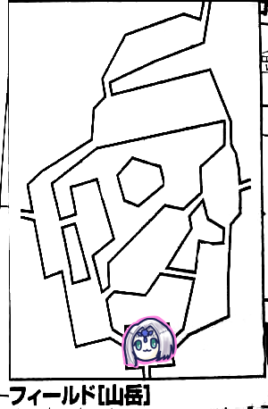

今回もエターナルセッションが開幕しました、まず各自のステータス確認から。
とは言ってもそこまでメモれていないんですよね…
タッシュ先生がファイター7レベルあるのでそこらへんの騎士には負けませんよとか言ってました。
GM「君たちの現在の平均レベル8.7です。そろそろ第一EDに行けますので視野に入れておいてくださいね。なお現在の達成度は23となっております。エターナル発見だったらこれぐらいの数値でいけることになってます」
ナナシ「あの、加工武器が欲しいのでひと月時間が欲しいんですが」
「その間適当なミッションとかクエストとかこなしてもいいけど」
「いいんじゃないいい機会だからしばらくだらだらしたいなー」
みぞれ「おうち欲しいなー」
ナナシ「パーティー財布1万ありますよ、アイテム換算すると9万3千。更に楽譜でプラス8千」
ブルーローズ「いや売らないから」
GM「中規模の邸宅なら2万で買えますよ。維持費月5千だけど金庫番(名誉点75点)を置けばいいです」
「2万は厳しいな、アイテム整理するか、さくっと売れるものはある？」
ナナシ「Aカードで単価10のものがあるんだけど…」
「書き間違いでは？」
ナナシ「珍しい宝石って1500でAなんだ、これも間違いかもしれない」
タッシュ「それ金S3000って書いてあるよ」
GM「バルバロステイルズは1500になってる」
タッシュ「アルケミストワークスは買値だね」
アイテムをいくつか売り払い、各自名誉点45点支払い、中規模の邸宅を買いました。
ブルーローズ「じゃあこれを機に執筆活動をします。名誉点250点で戯曲『エターナル・エンパイア』をを出版します。森の主を倒すスピンオフとかもありますよ」
GM「ちなみに別パーティーは邸宅にアイテムコレクションして博物館みたいにしてます。全アイテムコンプしようとしてて、手に入らないものは買ったりしてます」
「リアルのカードコレクションみたい」
結局2ヶ月経過させました。
ブルーローズ「カンヅメして戯曲を書き上げます」
みぞれ「メイドっぽいことしようかな」
ナナシ「もえもえきゅん」
みぞれ「それは違う気がする」
「みぞれはオムライスにケチャップで絵を描く腕が上がった」
みぞれ「何の役に立つんだｗ」
方針を決めることに。選択肢としては以下のような感じ。
・廃都の探索
・モンスター討伐
・主討伐(現時点えラプテラスとコカトリスの討伐が受けられる)
・各種クエスト
・廃都を根こそぎ
GM「で、君たち楽譜は全部あるんだっけ？」
「全部ありますよ」
GM「廃都の場所の検討はついてる？」
「……」
沈黙。
GM「まあ、演奏は外れても都があるかどうかは分かるのでしらみつぶしができるからね」
ブルーローズ「水上都市のエルフのとこはいかにも廃都がありそうだと思います」
ナナシ「クラーケンのところか」
今までの廃都の振り返り。
オボロンは歌から推測した。
ウルトゥケはここに遺跡があると聞いて行った。
あと現状ノーヒント。
クエストやミッションを色々確認した上で廃都の探索ミッションを選択しました。
廃都は特定のものを指定しなくてもいいとのこと。
ローレンスさんからミッションを受けました。
ローレンス「楽譜の情報は集めたけど君たちがほとんど自力で集めてしまったんだよな。廃都は人が行きづらい場所にあるのではないかと思っている。でなければ何千年見つからないわけがない」
みぞれ「山岳は確定だな、コカトリスの巣のところ」
「山岳はラプテラスだよ」

イベントロールで山岳イベントが発生。
GM「植物の植生が変わっていました。危険感知判定お願いします。タッシュ先生は毒効かないからやる必要ないです」
ブルーローズが失敗。
GM「まず1点の毒属性魔力ダメージ受けてください」
みぞれ「このイベントすごいデジャヴ。うさちゃん調べて」
ピーター「はーい、見識判定22」
GM「成功しました、危険な毒を持っている白い悪魔パート2です。血が止まりにくくなるのでダメージを受けたら追加で2点ダメージを受けます。3日経つと消えます」
ブルーローズ「これキュアポイズンした方がいい？」
みぞれ「前衛に出る方は是非やっておいてください」
ブルーローズ「では…キュアポイズン！」
GM「あ、これ達成値があります。魔力込みで振り直してください」
ブルーローズ「16」
GM「こっちの毒強度が15なので解除されました」
みぞれ「強い」
探索班「探索します」
GM「レミングの歯です」
みぞれ「またレミングが錬成されてしまう」
ナナシ「クリエイトレミング」

みぞれ「あるじいない…？」
GM「そこには大きな竜の姿をした魔物がですね」
ブルーローズ「いるよ！私のせいじゃない！選んだのみぞれちゃんだもん！」
みぞれ「こっちが近かったもん！」
ナナシ「ブルーローズが東って言ってたら」
ピーター「ラプテラスって魔物知識判定してましたっけ？」
みぞれ「ごめん記録がないんだ」
ピーター「じゃあやっちゃおう」
GM「弱点まで抜きました」
ピーター「私、弱点看破で魔法ダメージが+4になります」
「つよい」
「こいつ9レベル？どうする、ケンカ売っちゃう？」
「ミッション受けないと追加報酬とか貰えないんだっけ？」
GM「ミッション受けると情報が貰えるますね。実は3匹いるんだとか。あと防衛ポイントが使えるようになります。主には適用できないので取り巻きがいたりすると便利です」
「倒すかー」
ブルーローズ「この主探知機たる私がいたことを後悔するといいですわ！」
みぞれ＆タッシュ「何を言ってるかちょっとわかんないですね」
ナナシ「はい先制取った」
ピーター「ファイアストームいきまーす。23」
GM「頭22」
みぞれ「つよ」
GM「でもピーターには勝てないんだなー、残りも全部失敗」
ピーター「あ1回転した、31点、プラス4点」
タッシュ「そんな」
みぞれ「翼あと1点じゃね？これ普通にパァンできるよね」
ブルーローズ「逃げ回ってたあの頃が懐かしいですわね」
ピーター「でパラミスを…どこに撃とう…胴体に撃ちます」
タッシュ「じゃあファイアーボール放り込みますよ、16、ダイス目が残念だ、翼は持っていくよ」
GM「じゃ翼は省略して、頭と胴体だけ。胴体だけ成功」
タッシュ「14点です」
みぞれ「これわたし何もしなくてもよいのでは？」
ナナシ「じゃ胴体殴ろうかな、デーモンフィンガー入れとくか、23」
GM「17」
ナナシ「回った！24点撃破！じゃ頭攻撃します、21」
GM「21回避」
ブルーローズ「じゃあ私はここに落ちている頭を殴ればいいんですの？」
みぞれ「落ちている」
ブルーローズ「これ練技全部使えばいいかな」
タッシュ「全乗せ」
ブルーローズ「トンファー魔力撃キャッツアイスフィンクスナレッジジャイアントアームマッスルベア」
みぞれ「なんて？」
ブルーローズ「どうせ1回村に帰るし！」
みぞれ「村に帰る前提なんだ」
ブルーローズ「23」
GM「16、ダメージどうぞ」
ブルーローズ「38点！」
タッシュ「それ1回転もしてないの？ただ殴っただけ？」
ブルーローズ「回ってません。続いて27」
GM「21」
ブルーローズ「回った！40点！」
みぞれ「オーバーキル」
「よし倒せた、危険が排除されたから上に登ってみよう」
ブルーローズ「いったん帰るんじゃなかったらビビッド歌います」

GM「危険感知判定をどうぞ、14目標」
ブルーローズ「ファンブル」
ピーター「成功…いや、ファンブルです」
GM「2人して出血します」
ブルーローズ＆ピーター「ぴゅー」
みぞれ「あっここ登れるって私のメモに書いてあった」
(とありますが記述が見当たらないのでおそらく失われた第3回になんか書かれていたんだろうと思います)
GM「20mの登攀判定になっています」
ナナシ「リルドラケンがいればなぁ」
「先に誰か上がってロープ垂らす？」
タッシュ「ウォールウォーキングで3分あればいけないかな」
GM「3分あればいけるね」
ピーター「MPいくつですか？」
タッシュ「3だね」
ピーター「じゃそっちの方が全然いいですねお願いします」
タッシュ「5倍がけで…あ、無尽蔵にあるからってさっきのファイアーボールただ撃ちしてた。それ減らして…全員にウォールウォーキング。はい、歩けます。走ったら落ちるので歩いてくださいね」

GM「上り切りました。ここはほぼ山の頂上です。獣の骨が散乱し、風が吹いているのに強烈な獣のにおいが充満しています。そこに体長5、6mの怪物がゆっくりと頭をもたげ」
「おっと…？」
GM「さっき先に1人上ってロープを…と言ってたのでいけいけと思ってました」
ピーター「魔物知識判定します」
GM「弱点まで抜きました。ラプテラス(female)です」
タッシュ「奥さんだ」
GM「複数いたんですね」
みぞれ「能力さっきのやつと変わりませんか」
GM「かけらの場所だけが違います」
ナナシ「先制取った」
ピーター「じゃあ…私からですね。ファイアストームを…あっ低い！20」
GM「頭部怒りのクリティカルをしました、翼2も成功、あとは失敗です」
ピーター「20点です。あとパラミスを胴体にかけます」
タッシュ「ファイアーボール撃ち込みましょうか」
GM「やっすいなーファイアーボールが」
タッシュ「18です」
GM「翼2だけ抵抗しました」
タッシュ「回った、23点」
みぞれ「グレネード放り込みますか。16」
GM「全部抵抗しました」
みぞれ「ですよね。19点」
ナナシ「デーモンフィンガー入れて胴体をレザーリボンで攻撃します。23」
みぞれ「レザーリボンって武器なのか」
ナナシ「かわいい名前でしょ」
みぞれ「リボンっていうと状態異常全部防ぐ装備品ってイメージが」
タッシュ「FF3ｗ」
GM「クリティカル回避」
ナナシ「怒涛の2回目22」
GM「17」
ナナシ「18点」
GM「瀕死」
ブルーローズ「挑発攻撃ってしてたっけ」
ナナシ「してないね」
ブルーローズ「ブレスとかくる？」
ナナシ「風が来るね」
ブルーローズ「風かぁ、いいや、フォース撃ちます。フォースなら頭部撃てるの？」
ナナシ「魔法だからね。スフィンクスナレッジ欲しいね」
ブルーローズ「じゃスフィンクスナレッジ入れてー」
GM「僕は親切なGMだから教えてあげるけどこのままだとナナシを巻き込む可能性があるね」
ブルーローズ「しね！ナナシ！…えーと異貌化は前回の戦闘でしてるのか。乱戦内に移動してフォース。18」
GM「19」
ナナシ「てれってれってーん(ボッシュートの音)」
ブルーローズ「15点」
GM「あ、ぴったり死んだ」
ブルーローズ「わたくしがプリーストだということを教えて差し上げますわ！」
ナナシ「最近フォース地味に役に立つよね」
ピーター「剥ぎまーす！12！」
GM「補正値足して12？」
ピーター「足して12です」
GM「残念13からすごいやつがあるんだけどね」
GM「ここは1回だけ特別な探索ができます。成功したので5回結果を振ってください」
「5回！」
GM「ほら、獣の骨とかいっぱいあるので」
1人1回ずつ振りました。
GM「あと判定成功で分かることがあります。岸壁に文字が書いてあります」
アルテイがどーのとか書いてありました。
「やっぱここにあるんだ。遺跡行く？いったん戻ろうか？」
「ここにあるってことだけ確認だけしておく？」
「一度出すと1週間現れないからやめておこう、確実にここだし」
みぞれ「ここにロープ垂らしておく？毎回ウォールウォーキングする？」
GM「判定はいるからね、あとこれ帰りも判定必要だからね」
ブルーローズ「とりあえずキュアポイズンします」
みぞれ「これ戦闘前に受けたやつか…忘れてた」
ブルーローズ「1回目成功、2回目、あっ失敗、これ再チャレンジできます？」
GM「できます」
ブルーローズ「じゃやります。成功。そしてビビッド歌います」
みぞれ「普通の歌には反応しないんですよね、遺跡は」
GM「ぴくりとも反応しません」
ナナシ「普通の歌じゃないんですけどね」
ブルーローズ「登攀は行きも帰りも同じなんですか？」
GM「同じです」
タッシュ「うち金属鎧装備してる人いないんじゃない？」
ピーター「縄梯子30m持ってるよ、いや普通に考えて持ち歩けるものじゃないとは思うんですが…とりあえず魔法で」
タッシュ「かかりました。みんな走らないでね」
ブルーローズ「押すなってー」
ナナシ「お前最後尾だろ」
何も起こりませんでした。
6が出たのでモンスターと遭遇。
GM「2m前後の鳥に似た種族で、猛禽の頭をしています。これが2体。あと3mぐらいのでかい筋肉粒々の鬼が1体」
ピーター「魔物知識判定します」
GM「弱点抜きました。アードラーストライカー」
ナナシ「ガンダムみたい」
GM「格闘に特化したアードラーです。もう1匹はオーガウィザード、こっちも弱点抜きました」
ブルーローズ「筋骨隆々なのにウィザードなんだ」
タッシュ「俺より強いウィザードだぞこいつ」
ナナシ「こいつファストアクション持ってるからー…ケンタウロスレッグ入れます。先制成功」
タッシュ「ファストアクション挑発攻撃持ってるってほんとナナシだなこの敵」
ピーター「じゃ私から。ファイアジャベリン3倍がけ。MP14で使えるんですねーお得ですねー20」
GM「全員失敗」
ピーター「26点です」
みぞれ「あれ、弱点看破って炎+3が炎+6になるってこと？」
GM「そうです。やばい」
タッシュ「じゃファイアーボールを手前だけに撃ち込もう。滅せよ！21」
GM「両方抵抗成功」
タッシュ「17点です」
GM「これは無理だわー、ストライカー落ちました」
GM「さあどうしますか」
みぞれ「チアで」
ナナシ「じゃいきます。前に出まして、デーモンフィンガー使います。レザーリボンで攻撃します」
GM「MP減らしてくださいね」
ナナシ「あれ、減らしたはずだけど、(TRPGシステムの)セッション切れたかな。入り直します。20です」
GM「17」
ナナシ「2回転、32点ダメージです。ファストアクションでもっかい」
これも1回転して24点ダメージになりました。撃破。
タッシュ「ストライカー残してたらやばかったね、5回攻撃だよこいつ」
GM「飛び蹴り、極悪だから修正されたやつね」
「うさちゃんオーガウィザード12から豪華だからこっち剥がないと」
GM「そういう情報は言ってあげて、うさちゃんバルバロステイルズ持ってないから」
「弱点看破はめっちゃするのに」
タッシュ「ストライカー剥ぎます。2」
GM「宝石が1d6手に入るよ」
タッシュ「ここで名誉挽回を…1個」
コリドーンの機能で飛び交うハート。
みぞれ「3」
ナナシ「ここから名誉挽回を」
みぞれ「6！」
飛び交うハート。
ナナシ「じゃあ探索します、23」
みぞれ「あ、ま、ここっ…気を付けてたんさ…」
GM「いいねー今の」
無事刺されませんでした。
GM「頭に映像が浮かんだよ。さっさと探索するナナシと止めるみぞれ」
何も起こりませんでした。
セズウィック村に戻ってきました。
GM「よく考えたら食費もいるんだよねこれ、巻き戻しはしないけど」
タッシュ「そもそも自宅で寝泊りする場合は食費その他不要って書いてある」
GM「お得じゃん」
ブルーローズ「エントランスにタッシュ先生の銅像を飾りたい。ボタンを押すと目が光る。どっちが本物のタッシュ先生でしょうか！」
GM「はい、休みました。全快してください。では行先はアルテイでいいんですね」
ブルーローズ「もう主におびえなくてもいい！」
みぞれ「3匹目がいるかもしれないよ」
GM「主は振りません。3匹目がいることを隠しているのかは不明です」
ダイスロールで山岳イベントが発生しました。
ナナシ「ごーしゃ！ごーしゃ！タッシュのごーしゃ！」
GM「細い崖道です。目標値16です」
みぞれ「これこないだみんなベルトかなんかで繋いでみんな落ちた記憶がある」
「地獄だな」
ピーター「豆の木で突破できないかな」
GM「どれぐらい伸びる？」
ピーター「20mって書いてある」
GM「km単位なので無理です」
みぞれ「前と同じ方法やらないの？みんな結んでナナシが振るっていう」
ナナシ「あ、ごめん、もう振っちゃった」
ブルーローズ「また言うこと聞かずに先走ってる」
ピーターのみ失敗。
ピーター「ホバリング使います」
GM「失敗したらぺしゃってなってもらいます」
ピーター「成功」
GM「山頂に行くなら東コースと西コースがあります」
みぞれ「ブルーローズ選び放題ですよ」
西コースを選択。
何も起こりませんでした。
ナナシ「気を付けて探索します」
「学んだ」
何も起きませんでした。
ナナシ「ここってタッシュ先生がウォールウォーキング使ってブルーローズがビビッド歌うと回復する」
GM「ダメです。登攀はエリア移動になるので。でもそういうの嫌いじゃないよ」
タッシュ「ウォールウォーキングかけます。MP払って、せーのーウォーキーング。成功」
GM「みんな歩いて上って山頂につきました」
タッシュ「ブルーローズさんの出番ですね」
ナナシ「ビビッド歌うんでしょ」
ブルーローズ「ビビッド歌いたいけどね」
GM「ちなみにここはイベントないです」
ブルーローズ「ないならビビッド歌って時間経過させてってできるよね」
タッシュ「まあいいですよ」
「MP無尽蔵だしね」
ブルーローズ「じゃあアルテイの曲を歌いたいと思います。そういうこともアルテイ～♪」
タッシュ「そういう歌なの」
ブルーローズ「10」
GM「ギリ成功」
ブルーローズ「あるってー！」
GM「空中に浮かぶように荘厳な都市が現れました」
ナナシ「アルテイに19階はありますか(深度19がルルブに記載がないことのバグ確認)」
GM「ありません。これ廃都は大体同じ構成になっていて、イベントなどが違います」
「ないんかい」
GM「アルテイは白亜で流線形の建物が特徴です。ディズニーシーのリトルマーメイドエリアのような感じですね」
廃都アルテイ～深度0
みぞれ「深度と達成値も他の廃都と同じなんですかね」
GM「一緒です」
急いで進んで深度+6。
廃都アルテイ～深度16
何もない
急いで進んで深度+3。
GM「刻むねー血液のビート」
廃都アルテイ～深度9
何もない
急いで進んで深度+7。
廃都アルテイ～深度16
GM「イベントが発生します。ブルーローズさん1d6を振ってください」
ブルーローズ「2です」
GM「空っぽの部屋だった。終了です」
ナナシ「ビビッド歌わないの？」
ブルーローズ「タッシュ先生から歌って欲しいなーってのを感じたら歌います」
タッシュ「3人分足しても多いからいいんじゃない」
急いで進んで深度+7。
廃都アルテイ～深度23
ブルーローズ「そろそろ何かアルテイ？」
GM「部屋の中には魔物がいたぞー！これは何度でも出てくるお得な敵だー！魔神が登場しました！」
ブルーローズ「まじんごー」
GM「全身影の2mほどの魔神です」
ピーター「魔物知識判定します」
GM「すごいぶち抜かれた。ダルグブーリーです」
タッシュ「弱点炎+3だ！燃やそう」
GM「すごいこと言われた」
タッシュ「これブルーローズにファイアウェポンかけたら終わるんじゃないかな」
ナナシ「先制取りました。先発出ますね」
GM「こいつなー影から影へ移動できるから先制取れたらいきなりピーターのところ行けたんだけどなー」
タッシュ「ブルーローズ出る前にファイアウェポンかけるよ。はい発動」
ブルーローズ「じゃトンファー魔力撃、スフィンクスナレッジ入れて殴ります」
というわけでナナシ＆ブルーローズが軽く片付けたので色々省略。
ナナシ「省エネですなあ」
ブルーローズ「省エネですわ！」
タッシュ「ファイアウェポンいらなかったな」
ナナシ「ファナティでよかったような」
タッシュ「確かに」
普通に進む。深度+2。
廃都アルテイ～深度25
アルテイの金貨を1d6=3枚入手
普通に進む。深度+2。
廃都アルテイ～深度27
固定敵が出現しました。
長い尻尾を持った魔神が2体。→ギルドレック。前衛。
長い尻尾の身長3mの魔神が2体、うち1体がカケラ入り。→グルネル。後衛。
先制取りました。
タッシュ「ピーター鷹の目あるなら後ろを焼き払えるのか、じゃあ後ろをピーターとみぞれに任せて」
みぞれ「わたしグレネードは後ろ届かないよ」
タッシュ「うーん？じゃファイアーボールを前2体のギルドレックに。14、これは酷い」
みぞれ「まーまー失敗しなかっただけでも」
GM「両方抵抗、よーし残ったぁ！」
タッシュ「ひどい、13点」
GM「やったね、じゃここはなるべくお前らが苦しむようにするから」
みぞれ「グレネード放り込んどくか」
GM「両方抵抗失敗」
みぞれ「19点」
ナナシ「ギルドレック削ってななっしーが倒せるようにしてくれれば」
みぞれ「じゃグレラン撃っとくかー、おっええやん20」
GM「両方失敗」
みぞれ「13点」
GM「もう少しで死ぬところだった」
ピーター「ファイアブラストを前後に撃ち込もうかと思ったけど」
ナナシ「なるべく高威力をグルネルに撃ち込んどいたほうがいいかなと」
ピーター「じゃファイアストームいきまーす。後ろに。まあ乱戦形成してないから鷹の目いらないんですけどね。22」
GM「グルネルが狙われた！グルネル頑張れ！両方失敗」
ピーター「20点」
みぞれ「これグルネル尻尾残り1？惜しい」
ナナシ「じゃギルドレック落としに行きますか。念のためキャッツアイ入れとくか。レザーリボンでギルドレック1を狙います。21」
GM「17」
ナナシ「20点、いいねぇ」
GM「魔神アーマー硬いのはいいんだけどなー、最初に魔法でがんがん減らされるからな」
ナナシ「じゃもう片方行きます。20」
GM「ファンブル、ダメージ2回出して高い方を採用」
みぞれ「そのファンブル効果いらないんじゃないかな」
ナナシ「1回転25、19、撃破」
ブルーローズ「前に出ます」
GM「移動の問題は解決したの？」
ブルーローズ「韋駄天ブーツ買いました。魔力撃トンファー、全乗せで異貌化してかけら入りグルネルを攻撃、28」
GM「12」
ブルーローズ「37点、2発目行きます、24」
GM「ファンブル、ダメージ2回で高い方」
ブルーローズ「1回転で45点」
GM「うわーかけら入りもってかれたー」
みぞれ「削り切れると思わなかった」
GM「24だったら残ってたのに」
ナナシ「ゴリラ撃」
GM「接敵してるのがブルーローズかぁ」
ナナシ「魔力撃使えるんですよねグルネル」
GM「魔力撃なぁー。ファイアーボールを3倍がけして、ナナシ、みぞれ、タッシュ、ピーターを確実に狙います」
タッシュ「それね、範囲魔法は複数撃てないんですね、マルチターゲットっていうのがあってそれがないとダメらしいんですよ、ほんと今までごめんなさい」
GM「じゃピーターのファイアストームも」
ピーター「今日は数拡大使ってないからセーフ」
タッシュ「全員にかけたいならリープスラッシュ数拡大なんですよね」
ナナシ「ここはやっぱり魔力撃の殴り合いなんじゃないですか？」
GM「じゃーここは男らしくいくよ。5倍がけでリープスラッシュ」
みぞれ「魔力撃で来るとみせかけて」
タッシュ「会話前後噛み合っとらんじゃん」
ブルーローズとみぞれが抵抗失敗。
GM「主従コンビの美しき連携ですね。16点です。あと尻尾でブルーローズに攻撃します。21」
ブルーローズ「カウンターします。25。37点」
GM「尻尾飛びました」
GM「第2ラウンド」
みぞれ「チアで」
ピーター「チアで」
ナナシ「出ますか。尻尾はもうないからー、レザーリボンで胴体めがけて挑発攻撃、20」
GM「12」
ナナシ「20点」
ブルーローズ「殴りまーす22」
GM「18」
ブルーローズ「回った、39点」
ナナシ「よう回るなあ」
タッシュ「ギルドレック剥ぎます。あっ6ゾロ、今グルネル剥ぎましたって言っていい？」
GM「ダメです」
普通に進む。深度+4。
廃都アルテイ～深度31
GM「謎のかけらが落ちています」
みぞれ「金貨だな」
GM「金貨かどうかは分からない、判定成功しないと」
ピーター「成功しました」
GM「アルテイの金貨でーす」
ピーター「4枚手に入れました」
行き過ぎかも、となったので戻ることに。
みぞれ「戻るなら28-29、20-21、17-18辺りかなぁ」
深度-3。
廃都アルテイ～深度28
GM「装飾品があります。1d6どうぞ」
ブルーローズ「1」
GM「アルテイの指輪です。アルテイにおいて探索+1されます」
みぞれ「さっきのリープスラッシュ痛かったから回復してほしい」
ピーター「ビビッドで回復した2点使ってウィスパーヒール撃ちます、成功。14点回復」
GM「14点ってなんだ、9レべでボーナスいくつ入ってるの？」
ピーター「知力5です」
みぞれ「つよ」
急いで戻る。深度-11。
廃都アルテイ～深度17
GM「また装飾品です」
4でアルテイの首飾りを入手。探索+3。
ブルーローズ「アルテイの首飾りが…あるってー」
GM「ギャグが止まらないね」
みぞれ「20-21が狙い目ですかね」
普通に進む。深度+3
廃都アルテイ～深度20
GM「真っ白な石で作られた王城があります。そこに足を踏み入れた君たちは五つの目が書かれた紋章の描かれた大広間に出ます。というところで今日は時間切れなのでここでセーブしましょうか。五つの目が描かれた文様とは一体何なのか！」
GM「今回アルテイを見つけてラプテラスを倒したので冒険達成度が27になりました、おめでとうございます」
ナナシ「1年分の成果じゃん」
GM「この調子で月2回ぐらいやりたいなという欲望がですね」
ナナシ「月30日がいいです」
GM「3年前ね、エターナルクリアしたらやりたいって言ってたシナリオがいっぱいあるんだよね、どんどん溜まっていく」
ナナシ「GMの史上最長のキャンペーンてどれぐらいなんですか」
GM「8年かな、8年プレイして7年後に最終回をやったから足かけ15年だな」
ナナシ「よく集まったねそれ」
次回、廃都アルテイ特殊イベントから！